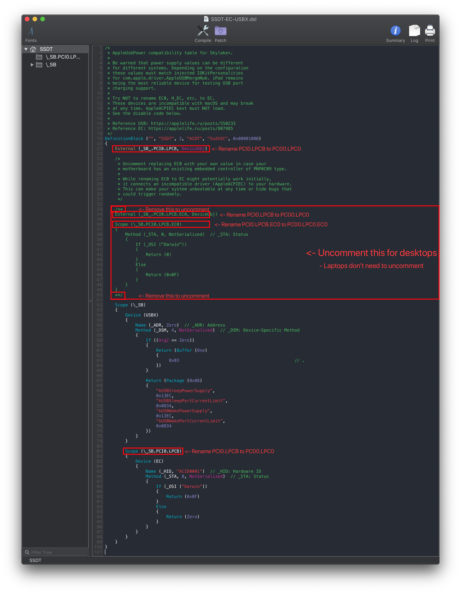

Last modified: Thu Jun 18 2020 03:15:12 GMT+0000 (Coordinated Universal Time)
Fixing Embedded Controllers: Manual
TO-DO:
- Finish Edge cases and sample SSDT edits
Finding the ACPI path
To find the ACPI pathing, you have 2 methods:
DSDT
Finding the ACPI pathing is quite easy actually, first open your decompiled DSDT you got from Dumping the DSDT and Decompiling and Compiling with either maciASL(if in macOS) or any other text editor if in Windows or Linux(VSCode has an ACPI extension that can also help).
Next, search for PNP0C09. You should get something similar:

From the above example we see 2 main things:
- Name of our embedded controller
- In this case being
EC0
- In this case being
- Pathing of our embedded controller
PC00.LPC0
But now we get into edge case territory, what fun!
The main ones to check for are:
If none of the above apply to you, you're ready for the next section:
DeviceManager
If you already have Windows installed on this machine, finding the EC pathing is fairly easy.
Start by opening up Device Manager in Windows and looking for a device named Embedded Controller. Once found, click on it and select the BIOS device Name entry. You should get something like this:

From the above, we can see that our pathing is SB.PC00.LPC0.EC0
Now with the pathing, you can head here: Edits to the sample SSDT
Edits to the sample SSDT
Now that we have our ACPI path, lets grab our SSDT and get to work:
- SSDT-EC-USBX
- For Skylake and newer and all AMD systems
- SSDT-EC
- For Broadwell and older
Now when opening this SSDT, you'll notice a few things. Mainly:
- Some code is commented out
- This is code for disabling our EC
- Laptops users SHOULD NOT uncomment this
- There's a new EC called
Device (EC)- DO NOT RENAME THIS, this will be the EC we give to macOS
Before:
External (_SB_.PCI0.LPCB, DeviceObj) <- Rename this
Scope (_SB.PCI0.LPCB) <- Rename this

Following the example pathing we found, the SSDT should look something like this:
After:
External (_SB_.PC00.LPC0, DeviceObj) <- Renamed
Scope (_SB.PC00.LPC0) <- Renamed

Edge Cases
Multiple PNP0C09's show up
When multiple PNP0C09 show up, we need to next check for the following properties:
_HID(Hardware ID)_CRS(Current Resource Settings)_GPE(General Purpose Events)
What these signify is whether this PNP0C09 device is real or not, as per the ACPI spec. So one's matching the above criteria are the one's we want to disable.
- Note: If _STA shows up as well, you'll need to go here: PNP0C09 already has an
_STAmethod
No PNP0C09 show up
When this happens, you'll only need to create a "dummy" EC for macOS. You'll still want to find the PCI and LPC pathing for this device. So follow the guide as if you were creating a laptop SSDT-EC.
PNP0C09 already named EC
Congrats! No need to create an SSDT-EC! However you will still want USBX if you're skylake or newer.
Prebuilt can be grabbed here: SSDT-USBX.aml
PNP0C09 already has an _STA method
This is the equivalent of not having an EC as we can't control it with our SSDT-EC, instead we'll need to create a "dummy" EC for macOS. You'll still want to find the PCI and LPC pathing for this device. So follow the guide as if you were creating a laptop SSDT-EC.
Example of an EC with STA already:

Compiling the SSDT
With the SSDT done, you're now ready to compile the SSDT!
Wrapping up
Once you're done making your SSDT, either head to the next page to finish the rest of the SSDTs or head here if you're ready to warp up: